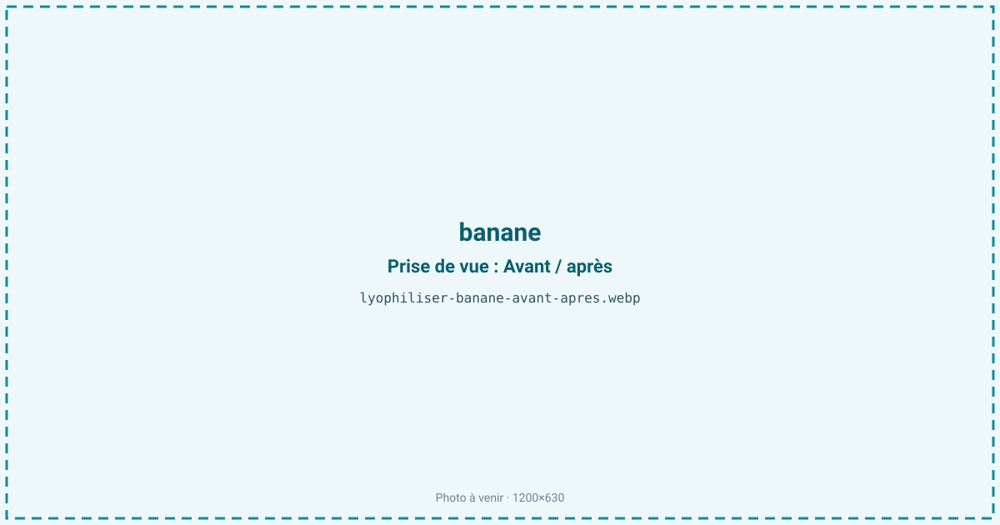
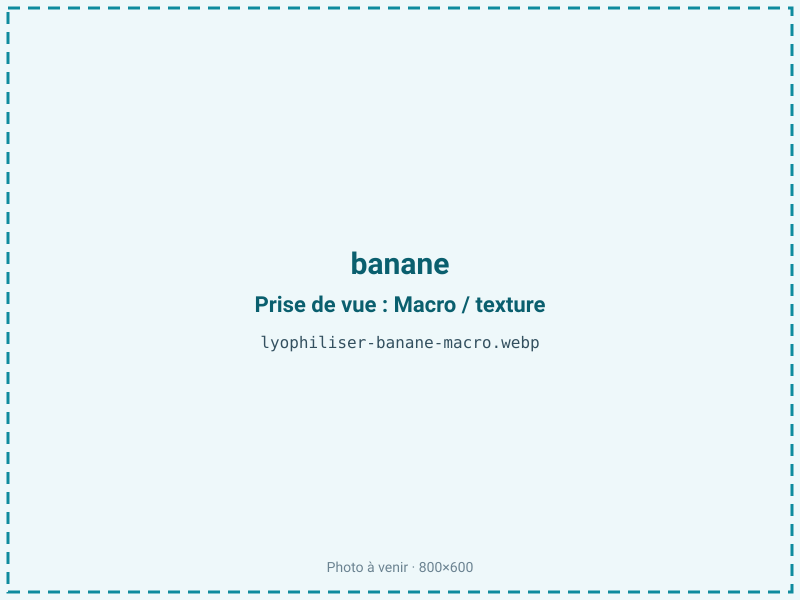
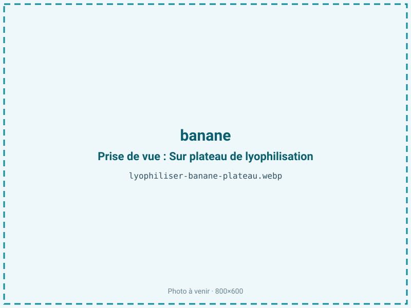
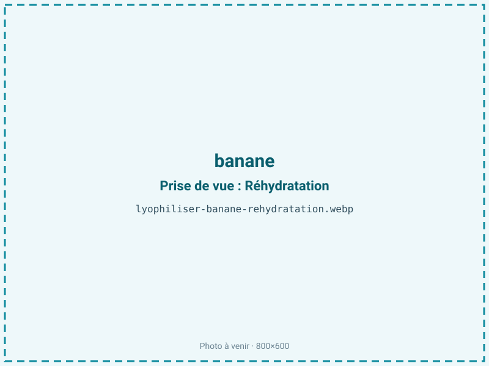

Lyophiliser des bananes
La banane noircit en quelques heures une fois coupée et fermente vite à maturité. Lyophilisée, elle donne des chips fondantes et sucrées, sans huile ni friture, à condition de neutraliser le brunissement enzymatique et de congeler vite. C'est un en-cas naturel et une poudre pratique pour smoothies et alimentation infantile.

En bref
Comment banane se comporte à la lyophilisation
La banane se distingue des autres fruits lyophilisés par sa richesse en amidon et sa teneur en eau plus faible, autour de 74 %. Sa pulpe est dense, peu alvéolaire, ce qui rend le front de sublimation plus lent à progresser qu'une fraise ou une framboise à structure ouverte. Elle contient beaucoup d'amidon qui se convertit en sucres au fil du mûrissement, du potassium, et très peu de lipides.
Son point faible est enzymatique : la banane est riche en polyphénoloxydase, l'enzyme qui, au contact de l'oxygène dès qu'on la coupe, brunit la chair en quelques minutes. Contrairement à la fraise ou à la myrtille, dont le risque de brunissement est faible, la banane exige donc d'être tranchée puis traitée et congelée sans délai — un jus de citron ou un bref blanchiment inactivent l'enzyme. À la congélation, le froid stoppe l'activité enzymatique ; à la sublimation, la densité de la pulpe impose une couche fine. Les sucres, à transition vitreuse basse, exposent au collapse si la rampe est trop rapide.
Paramètres de cycle
Trancher en rondelles régulières de 4 à 6 mm et traiter immédiatement contre le brunissement — trempage rapide en jus de citron (acide ascorbique ou citrique) ou léger blanchiment — puis congeler sans attendre à −30 °C. La régularité des tranches est cruciale sur une pulpe dense : une rondelle trop épaisse garde un cœur humide et sèche mal. En primaire, une clayette modérée et une montée maîtrisée limitent le collapse des sucres.
La banane étant maigre, sans lipides à protéger, on vise une aw basse de 0,20 à 0,30 : descendre est favorable à la stabilité et n'entraîne aucun rancissement, contrairement aux produits gras. Le critère d'arrêt vise une chip cassante et fondante, sans zone souple centrale. Un contrôle visuel de la couleur en fin de cycle valide l'efficacité du traitement anti-brunissement.
Pièges connus
- Brunissement enzymatique : traiter et congeler vite.
- Trancher régulièrement pour un séchage homogène.



Variantes & provenance
La maturité change tout, plus encore que pour les autres fruits : une banane peu mûre est riche en amidon, moins sucrée, plus ferme et donne une chip plus neutre ; bien mûre, elle est plus sucrée, plus parfumée mais plus sujette au collapse et au brunissement. La variété compte aussi — une Cavendish de dessert n'a ni le profil ni la texture d'une banane plantain, plus amylacée, qu'on lyophilise plutôt en poudre. Le calibre détermine le diamètre des rondelles et l'homogénéité du séchage. Enfin, selon le format visé — chips en rondelles, purée étalée ou poudre — on adapte la découpe : la purée étalée en fine couche donne une feuille qu'on réduit ensuite en poudre pour smoothies et petits pots.
Conservation & DLUO
La banane est un fruit maigre : son facteur limitant est la reprise d'humidité et, à la marge, un brunissement non enzymatique (réaction de Maillard entre sucres et acides aminés) qui peut se poursuivre lentement, ce qui explique une DLUO un peu plus courte que celle des fruits rouges. Une aw basse lui est favorable et sans risque de rancissement, contrairement aux produits gras. Très hygroscopique, la chip se ré-humidifie à l'air et perd son croquant en devenant caoutchouteuse : refermer vite et conditionner en sachet barrière est indispensable. Comptez 12 à 18 mois en sachet barrière, à température ambiante et à l'abri de la lumière. Un stockage au frais ralentit le brunissement non enzymatique résiduel et préserve la couleur claire.
12 à 18 mois en sachet barrière.
Estimez selon votre emballage :
Face aux autres procédés de séchage
Les chips de banane du commerce sont généralement frites dans l'huile : croquantes mais grasses et caloriques. Au séchage à l'air chaud, la banane brunit fortement (enzymatique puis Maillard) et durcit en un fruit sec brun et coriace. Le séchage à chaud accentue ce brunissement et le goût cuit. Le micro-ondes sous vide fait mieux mais peine à préserver une couleur claire sur une matière aussi sucrée et réactive. La lyophilisation, sur des rondelles traitées, donne une chip claire, fondante et sans matière grasse ajoutée, le seul procédé qui restitue le fondant sucré de la banane sans friture ni brunissement marqué.
Marchés & applications
La banane lyophilisée alimente le rayon chips de fruits et snacking sain, les mueslis et barres de céréales, et surtout la poudre pour smoothies, la nutrition sportive et l'alimentation infantile (petits pots, céréales bébé), où sa douceur et son absence d'allergènes majeurs sont appréciées. Les clients types sont les marques de snacking et de petit-déjeuner, les fabricants d'aliments pour bébés et les acteurs de la nutrition qui recherchent une base sucrée naturelle, légère et facile à doser.
- Chips de fruit
- Poudre pour smoothies
- Alimentation infantile
Questions fréquentes — banane
Pourquoi la banane brunit-elle et comment l'éviter ?
Elle est riche en polyphénoloxydase, qui brunit la chair au contact de l'air. Un trempage en jus de citron ou un bref blanchiment, suivi d'une congélation rapide, inactive l'enzyme.
Les chips sont-elles grasses comme les chips frites ?
Non : la lyophilisation n'ajoute aucune huile. La chip est sucrée et fondante, sans matière grasse ni friture, contrairement aux chips de banane classiques.
Quel est le ratio de la banane ?
Environ 4:1, plus favorable que la plupart des fruits car la banane est moins riche en eau (74 %) et plus dense en matière sèche.
Faut-il une banane mûre ou peu mûre ?
Peu mûre, elle donne une chip plus ferme et neutre, riche en amidon ; bien mûre, plus sucrée et parfumée mais plus sujette au collapse et au brunissement.
Pourquoi la DLUO est-elle un peu plus courte que celle de la fraise ?
Parce que sa richesse en sucres et en amidon entretient un léger brunissement non enzymatique (Maillard) au stockage. Un stockage au frais le ralentit.
Peut-on en faire de la poudre ?
Oui, en broyant les chips ou en lyophilisant une purée étalée. La poudre sert aux smoothies, à la nutrition sportive et à l'alimentation infantile.
La chip ramollit-elle ?
Oui si elle reprend l'humidité : elle devient caoutchouteuse. Il faut refermer vite et conditionner en sachet barrière pour garder le croquant.
Prochaine étape : envoyez-nous 200 g
Vous avez les repères de la banane. La suite logique : nous envoyer un échantillon et repartir avec une fiche technique sur votre produit — rendement, aw finale, coût au kilo.
Tester la banane — 250 à 500 €Déductible de votre premier lot.